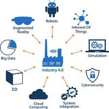

Le Web 4.0 : réponse à une nouvelle révolution industrielle
Une société de plus en plus exigeante
Depuis le début du 21ème siècle notre société s'habitue de plus en plus à l'automatisation, l'efficacité et la rapidité que peuvent nous procurer nos machines,
nos ordinateurs grâce à internet et le web. Que cela soit au niveau industriel ou au quotidien le web est devenu omniprésent. De nos jours il est de plus en plus
impensable de se passer du gps, des annuaires numérique ou encore des sites bancaires permettant entre autre de consulter ses comptes sans avoir à se déplacer.
La productivité et le gain de temps que nous procure cette mine d'or qu'est le web permet également de répondre à des besoins de plus en plus exigeants comme
la possibilité de centraliser nos actions, pouvoir répondre à l'ensemble de nos besoins grâce à un ensemble d'outils très limité voir unique. Le plus grand
exemple est celui du smartphone qui de nos jours permet à l'aide d'internet et du web de consulter sa banque, ses mails ou encore communiquer, envoyer des documments
à une personne qui est à l'autre bout du monde à l'aide d'un ou 2 petits contacts de doigts sur notre écran. Le client, l'utilisateur étant maintenant habitué
à répondre à ses besoins rapidement et facilement ; il souhaite maintenant obtenir des réponses personnalisées, plus complexes et plus rapide à ses exigeances.
Pour cette raison que d'une certaines facon une révolution industrielle est necessaire. En effet l'arrivée de la réalité virtuelle, la réalité augmentée ou
encore les objets connectés ("l'internet des objets") ont bouleversées notre quotidien et le monde professionnelle ce qui nous amène donc à l'industrie 4.0 et
le web 4.0.

Le web 4.0 dans les innovations technologiques
La réalité augmentée et virtuelle
La réalité augmentée est une comme une interface virtuelle que l'on surperpose sur des élèments de la réalité de façon réaliste ce qui permet ainsi d'avoir
des informations complémentaires. La réalité virtuelle est en revenche elle une simulation de notre monde ou d'un monde fictif en 3 dimensions de sorte à ce que
l'on croit etre plongé dedans. Grâce à ces 2 "réalité" on a un confort de vie qui s'améliore encore. On peut prendre l'exemple des "Google glass" qui sont un bon
exemple de réalité augmentée, des lunettes pouvant afficher des informations complémentaires sur ce que l'utilisateur regarde (des monuments, des lieux, les apports
nutritifs de certains aliments ect...).

De plus cela permet un apprentissage, des analyses, une productivité ou encore une meilleure sécurité, en effet grâce à ces innovations on peut se projeter pour
des tests sans se soucier de la sécurité ou meme permette l'apprentissage sans avoir des très gros coûts matériels (étude de médecine, opération en réalité virtuelle
pourrait empecher le risque d'agraver l'état d'un patient en cas de faute ect...). D'un point de vue dvertissement on peut se balader de monde virtuel en monde
virtuel ou encore avoir accès à la mine d'or d'informations que propose le web lors de visites touristiques (sur des monuments par exemple).
"L'internet des objets"
De nos jours l'utilisation du smartphone occupe une majeure partie de notre journée. C'est un outil à tout faire qui peut aller de la consultation de mail
au partage de documents à une personne présente à l'autre bout du monde tout en passant par la possibilité de consulté la météo de la semaine à venir. Il est
également possible de nos jours de contrôler de nos affaires numériques à l'aide de notre smartphone, contrôle de l'arlame de protection de notre maison, régler
le chauffage ou encore changer la couleur de la lumière ambiante. Le smartphone permet de combler ce genre de besoin complexe à l'aide des objets qui sont de nos jours
connectés entre eux. Il s'agit d'une technique qui se répand de plus en plus et commence à être omniprésent on parle ici d'internet des objets. On arrive très rapidement
à un monde ou tous les objets seront connectés aux réseaux et entre eux, pour permettre un maximum de communication et une centralisation des activités ou encore des informations.

Le web joue un rôle très important dans toutes ces innovations, rôle que l'on va observer d'un point de vue utilisateur comme du point de vue développeur.